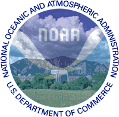

|  |
ESRL Atmospheric Chemistry Research Review29-31 January 2008 • Boulder, CO |
Laboratory scientific reviews are conducted every four years to evaluate the quality, relevance, and performance of research conducted in OAR laboratories to both internal and external interests, and to help strategically position the laboratory in its planning of its future science. These reviews are intended to ensure that OAR laboratory research is linked to the National Oceanic and Atmospheric Administration (NOAA) Strategic Plan, relevant to NOAA Research mission and priorities, and consistent with NOAA planning, programming, and budgeting.
This review covers atmospheric chemical sciences research at ESRL's Chemical Sciences Division and Global Monitoring Division over the last four years. Specific research areas included in the review are:
- Stratospheric Ozone
- Carbon Dioxide, Methane and Climate
- Non-CO2 Climate Gases
- Regional Air Quality
- Chemical Transformation and Long Range Transport
- Aerosols and Climate.
Additional Information
Post Review Documents
Presentations
Tuesday - January 29, 2008
| Welcome and ESRL Organization Overview (1.5M pdf) | Alexander MacDonald |
| ESRL history and 2005 reorganization; Personnel, Resources, Facilities; Vision and Overview of Role of Atmospheric Chemistry in ESRL | |
| Atmospheric Chemistry Earth System Research Laboratory (0.8M pdf) | A.R. Ravishankara |
| Atmospheric Chemistry at ESRL: Introduction and Overview (0.8M pdf) | James Butler |
MAJOR SCIENTIFIC AREAS – SIX TOPICS
Relation to societal needs, NOAA mission
& program goals; Key partnerships: Internal/External (ESRL, LO's,
Joint Institutes, etc); Approaches (lab, field monitoring + intensives,
theoretical/analysis); Products and customers; Review agenda
|
Stratospheric Ozone Susan Solomon and David Hofmann |
|
| Introduction (0.1M pdf) | Susan Solomon |
| Trends in Ozone-Depleting Substances and ODGI (1M pdf) | Steve Montzka |
| Global and Antarctic Ozone Observations (2.1M pdf) | David Hofmann |
| Climate Benefits of the Montreal Protocol (1.4M pdf) | David Fahey, John Daniel |
| Evaluating Potential ODS Substitutes (0.3M pdf) | Jim Burkholder |
| Chemical/Dynamical Linkages, and a Look Ahead (1.1M pdf) | Susan Solomon |
|
Carbon Dioxide, Methane, & Climate Forcing Pieter Tans and James Butler |
|
| Overview (0.6M pdf) | Jim Butler |
| Global Monitoring: Trends/Distributions of CO2 and CH4 (0.6M pdf) | Ed Dlugokencky |
| What We're Learning from Tall Towers and Vertical Profiles (0.8M pdf) | Arlyn Andrews |
| CarbonTracker (2M pdf) | Andy Jacobson |
| Future Plans and Directions (1.1M pdf) | Pieter Tans |
Wednesday - January 30, 2008
|
Regional Air Quality Fred Fehsenfeld and James Meagher |
|
| Overview (1.4M pdf) | Fred Fehsenfeld |
| Evaluating Emission Inventories using Top-down Approaches (0.6M pdf) | Tom Ryerson |
| Nighttime Tropospheric Chemistry (1.6M pdf) | Steve Brown |
| Secondary Organic Aerosols in Polluted Atmospheres (1.8M pdf) | Joost de Gouw |
| Ozone Transport and Mixing Processes (1.3M pdf) | Mike Hardesty |
| Wrap Up and Future Plans (0.6M pdf) | Jim Meagher |
|
Non-CO2 Climate Gases David Fahey and James Elkins |
|
| Overview (0.6M pdf) | David Fahey |
| N2O, CFCs, HCFC's, and other Gases (0.7M pdf) | James Elkins |
| Airborne and Emissions Studies (1M pdf) | Dale Hurst |
| Assessing and Understanding Tropospheric Ozone Changes (1.2M pdf) | Samuel Oltmans |
| Water Vapor in the Upper Troposphere and Lower Stratosphere (0.7M pdf) | Karen Rosenlof |
| Wrap Up and Future Plans (0.4M pdf) | James Elkins |
|
Aerosols and Climate John Ogren and Daniel Murphy |
|
| Overview (0.2M pdf) | John Ogren |
| Aerosol Direct Radiative Forcing (1.3M pdf) | John Ogren |
| Aerosol Chemistry (0.7M pdf) | Dan Murphy |
| Aerosol-Cloud Interactions (0.9M pdf) | Graham Feingold |
| Influence of Clouds on Aerosol Properties (1.5M pdf) | Betsy Andrews |
| Soot Emissions from Ships (1.2M pdf) | Dan Lack |
| Wrap Up (0.1M pdf) | Dan Murphy |
Thursday - January 31, 2008
|
Chemical Transformation & Long-Range Transport David Parrish and Russell Schnell |
|
| Overview (1.0M pdf) | David Parrish |
| Long Range Transport of Gases and Aerosols: The Baseline Observatory Perspective (1.6M pdf) | Russ Schnell |
| Interannual Variability in Atmospheric Hydroxyl as Inferred from Measurements of CH3CCl3, CH4, and Other Trace Gases (0.3M pdf) | Steve Montzka |
| Gas Phase and Aerosol Processing during Long-Range Transport (1M pdf) | Joost de Gouw |
| Laboratory Studies of Critical Chemical Processes (0.4M pdf) | Ranajit Talukdar |
|
Wrap Up and Future Plans David Parrish |
|
| End-to-End Service: Science, Assessments, and Service to Society (1.7M pdf) | Susan Solomon |
| Atmospheric Chemistry at the Earth System Research Laboratory: Wrap Up and Thoughts on Our Future (0.5M pdf) | A.R. Ravishankara |
| Thoughts and Plans on Future Research at ESRL (0.1M pdf) | James Butler |
| Earth System Research Laboratory: Mission (1M pdf) | Alexander MacDonald |
Review Materials
- Supporting Documents
-
- ESRL Publications and Hirsch Index Statistics
- ESRL Awards
- ESRL Memberships and involvement in prestigious organizations.
- ESRL service of individuals in technical and scientific societies such as journal editorships, election to boards or executive level offices, service on U.S. interagency groups, service of individuals on boards and committees of international research-coordination organizations.
- ESRL leadership and participation in national and international state-of-science assessments.
- ESRL Sampling Locations (xls)
- ESRL collaboration with other national and international research groups, both inside and outside of NOAA as well as reimbursable support from non-NOAA sponsors.
- ESRL patents, Cooperative Research and Development Agreements (CRADAs) and other activities with industry.
- Contributions of data to national data bases and programs, and involvement in international quality-control activities to ensure accuracy, precision, inter-comparability, and accessibility of global data sets.